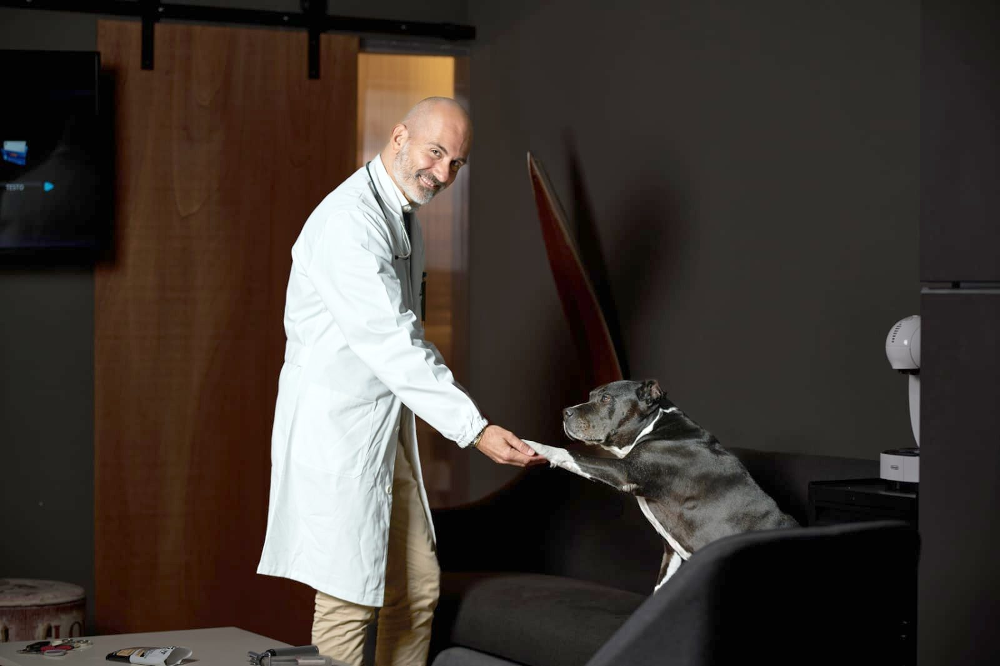
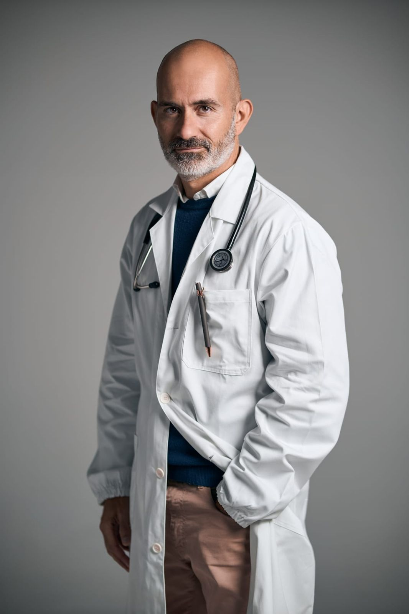

Veterinario a domicilio a PadovaLa sua salute
La tranquillità
di casa
Un servizio veterinario a domicilio a Padova e provincia
Mi prendo cura del tuo animale nel suo ambiente, con attenzione e ascolto.

Le cure di cui ha bisogno,
dove si sente a casa
Dalla prima visita ai controlli nel tempo: scopri quali prestazioni possiamo organizzare a domicilio.
Anche il tuo gatto,
a casa sua
Mi occupo della salute di cani e gatti, in ogni fase della vita. Per il tuo gatto possiamo organizzare visite cliniche, vaccinazioni, prelievi e controlli direttamente a domicilio, valutando insieme le sue necessità.
Il trasportino, il viaggio e la sala d’attesa possono essere fonte di disagio. Restare nel proprio ambiente può rendere la visita più serena, rispettando i suoi tempi e le sue abitudini.
Dal gattino al gatto anziano, concordiamo un percorso di prevenzione e assistenza adatto a lui.
Quando invecchia,
esserci conta
ancora di più
Alzarsi diventa più difficile, le abitudini cambiano e anche un viaggio può pesare. La visita a domicilio permette di osservare cane e gatto anziani nel loro ambiente quotidiano.
Un controllo dedicato per parlare di mobilità, appetito, sonno e comportamento, valutare gli esami utili e concordare come seguirlo nel tempo.
Lo conosci meglio
di chiunque altro
Raccontarmi questi cambiamenti è un buon punto di partenza per organizzare una valutazione.
Una visita, in tre passi
Mi racconti cosa serve
Chiamami o scrivimi indicando Comune, animale e motivo della richiesta. Valutiamo se il domicilio è adatto alla situazione.
Concordiamo visita e costo
Definiamo giorno, fascia oraria e prestazione. Il costo viene chiarito prima dell’appuntamento, insieme agli eventuali esami aggiuntivi.
Ci incontriamo a casa
Prepara il libretto sanitario, le terapie in corso e gli esami precedenti. Al termine concordiamo le indicazioni e gli eventuali controlli.

Esperienza clinica
Attenzione alle persone
Mi sono laureato in Medicina Veterinaria nel 2008. Dopo esperienze formative in Italia e all’estero, dal 2012 ho collaborato con cliniche veterinarie di Padova e Vicenza, occupandomi di pronto soccorso e pazienti ricoverati.
Questo percorso mi ha insegnato quanto conti affiancare alla competenza clinica l’ascolto di chi vive ogni giorno accanto all’animale.
Con il servizio a domicilio porto questa attenzione nelle vostre case, cercando un rapporto di fiducia con il paziente e con la sua famiglia.
A Padova
e nei Comuni vicini
Il servizio è disponibile su appuntamento dal lunedì al venerdì. Indica il tuo Comune quando mi contatti, così possiamo verificare disponibilità e organizzazione.
Scopri tutti i comuni interessati dal servizio
Padova, Abano Terme, Albignasego, Cadoneghe, Campodoro, Curtarolo, Grisignano di Zocco, Limena, Mestrino, Montegalda, Montegrotto Terme, Noventa Padovana, Rubano, Saccolongo, Selvazzano Dentro, Torreglia, Veggiano, Vigodarzere, Vigonza e Villafranca Padovana.
Non trovi la tua località? Contattami per verificare la possibilità di una visita.
Costi e disponibilità
Il costo dipende dalla prestazione richiesta, dagli eventuali esami e dalla località. Chiedimi un’indicazione personalizzata prima di confermare.
Se hai più animali, possiamo valutare come organizzare i controlli nello stesso appuntamento. Le prestazioni e i relativi costi vengono concordati.
Quando serve una struttura
Chirurgia, diagnostica strumentale e visite specialistiche possono richiedere un ambulatorio o una clinica. Ti aiuto a capire il percorso appropriato.
Chiedi informazioni ↗La fiducia nasce
dall’incontro
Leggi le recensioni e scopri cosa dicono di me
“Premuroso e sempre disponibile. Una persona davvero carina, professionale e attenta, che trasmette fiducia e serenità. Consigliatissimo!”
Silvia Zara · ★★★★★ recensione Google, novembre 2026“Il dott. Cerulli non è solo un veterinario affidabile e ben informato, ma anche una persona gentile e cordiale. I miei mici sono di solito timidi, ma con lui sembrano sempre tranquilli durante le visite. Lo consiglio vivamente!”
Peihao Sun · ★★★★★ recensione Google, novembre 2026Qualche risposta utile
Cosa posso fare visitare a domicilio?
Cani e gatti per visite cliniche, prevenzione, vaccinazioni, controlli e prelievi. La possibilità di gestire un problema a domicilio va valutata caso per caso al momento del contatto.
Come preparo la casa e il mio animale?
Scegli uno spazio tranquillo e sicuro. Tieni a disposizione libretto sanitario, referti e nomi dei farmaci assunti. Per un gatto, evita che possa uscire o nascondersi in luoghi inaccessibili prima dell’arrivo. Riceverai eventuali indicazioni specifiche per la prestazione concordata.
Per gli esami del sangue serve il digiuno?
Dipende dagli esami e dalle condizioni del paziente. Concordiamo prima come prepararlo: non modificare pasti o terapie senza indicazioni personalizzate.
Posso scegliere giorno e ora?
Puoi indicare le tue preferenze. L’appuntamento viene confermato direttamente, considerando disponibilità, zona e necessità del paziente. L’invio di una richiesta non costituisce prenotazione.
Posso chiedere una visita per più animali?
Sì, possiamo concordare un unico appuntamento per più animali. Indica specie, numero e prestazioni richieste: definiamo prima tempi e costi.
Come posso pagare una prestazione a domicilio?
Puoi pagare comodamente a domicilio, al termine della visita, in contanti oppure con bancomat o carta di credito tramite POS.
Effettui pronto soccorso a domicilio?
Il servizio descritto è su appuntamento e non sostituisce una clinica di pronto soccorso. In caso di emergenza non aspettare una risposta a un messaggio: rivolgiti subito a una struttura attrezzata.
Raccontami
di lui
Per una visita o un’informazione, puoi chiamarmi oppure preparare un messaggio WhatsApp con il modulo qui accanto.
328 413 7080 ↗veterfra@yahoo.itLunedì–venerdì · 8:00–19:00
Visite su appuntamento a Padova e provincia